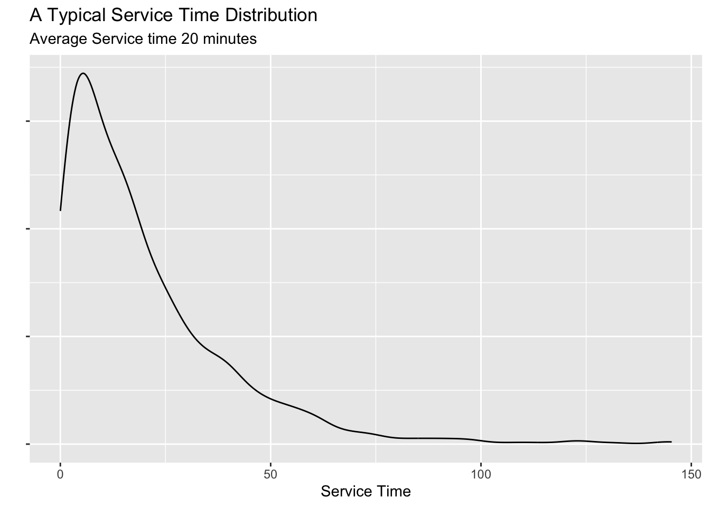
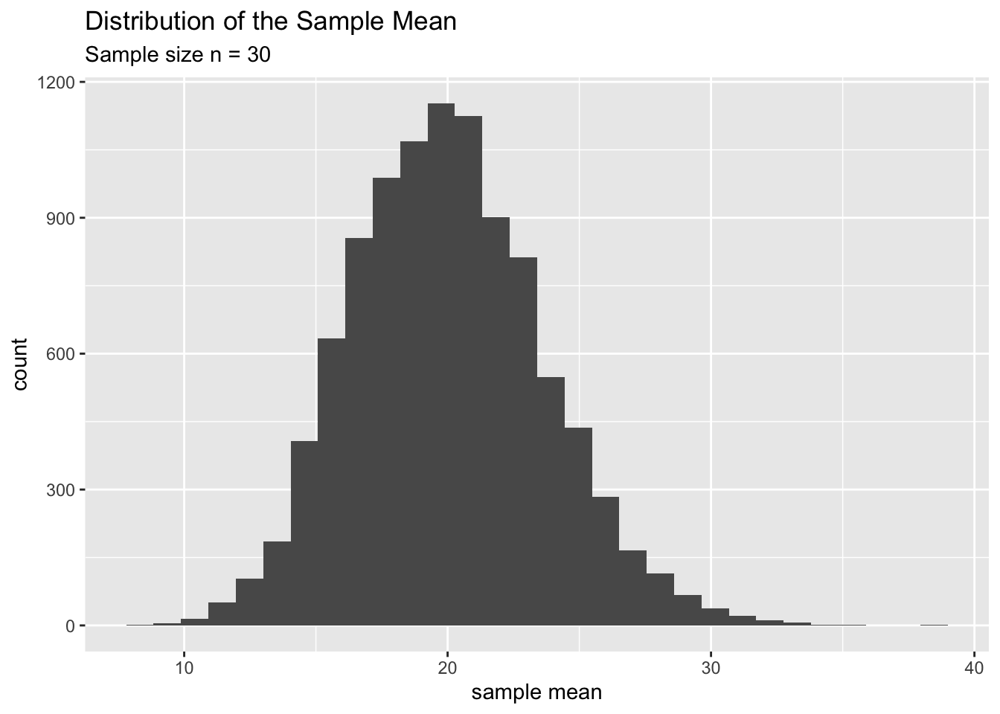
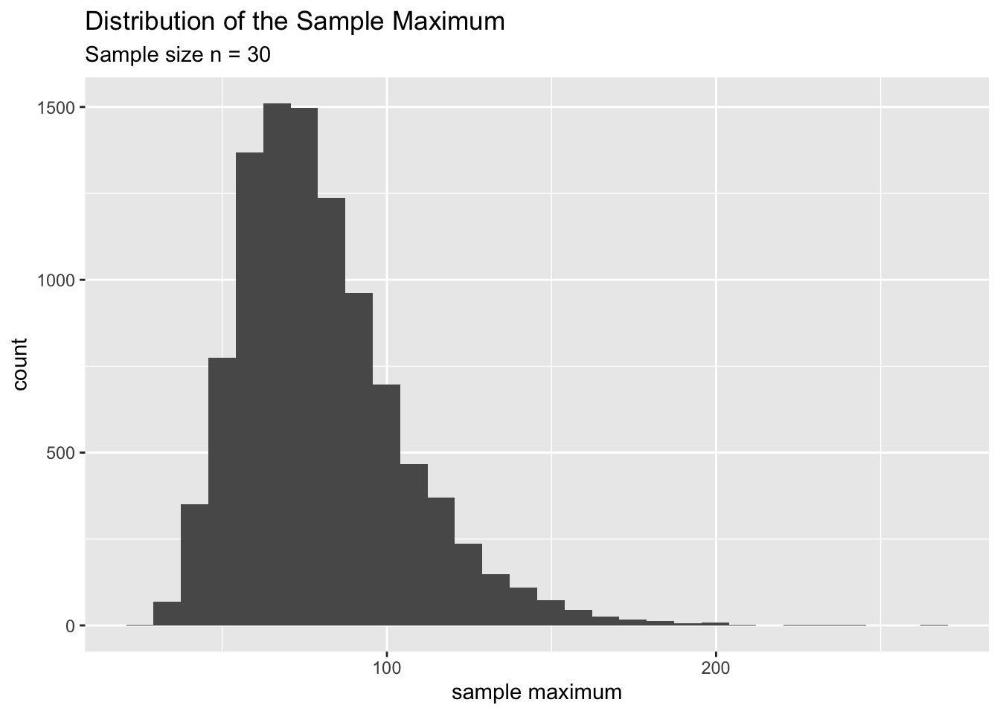
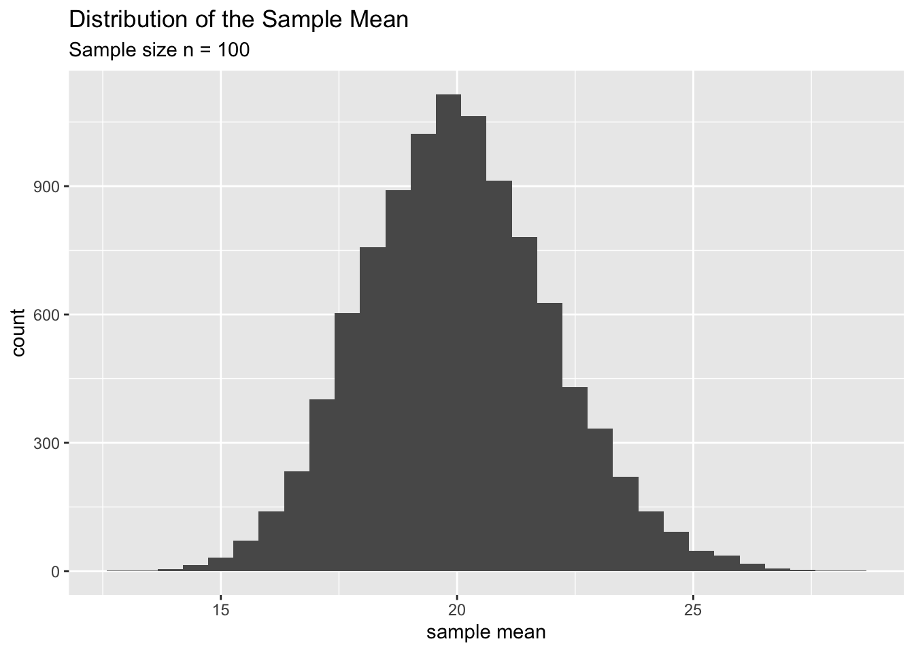
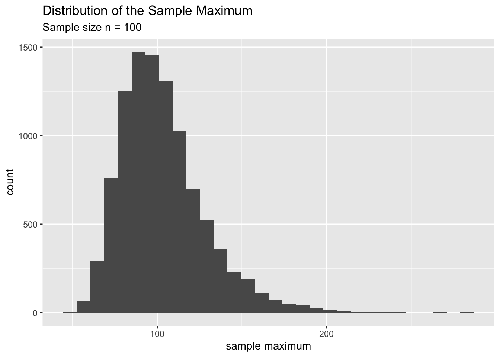

Chapter 2 Sampling Distributions
Many statistical problems require us to estimate population parameters or model parameters. For example, we might want to know the percentage of binge drinkers in a college campus. A good point estimate for this parameter is the sample proportion \(\hat p\). However, this value does not mean much unless we provide the variability of it. That is, we’d like to know if we take a another sample of the same size (from the same population), how different of a \(\hat p\) would we see compared to the one we had before. In other words, how much variance can we expect in \(\hat p\) from sample to sample. Let’s look at an example.
Consider the following simulated population. Although this is a simulated population it is not that uncommon. For example, most service time distributions, like time to complete a transaction, time to repair a car, etc follows this pattern.

Suppose we want to estimate the mean of this population using only a random sample of say, \(n=30\). The following code will do just that.
mysample <- sample(mypop, size = 30)
mean(mysample)## [1] 18.79358What if we take another sample and calculate the mean. It will be different from the one above.
mysample <- sample(mypop, size = 30)
mean(mysample)## [1] 19.73084This variability in our sample statistics is what we are going to study in this chapter. In particular, we are going to look at the variability of two sample statistics:
- The sample mean (\(\bar x\))
- The sample maximum.
2.1 How to Construct a Sampling Distribution?
Take a random sample from this population and calculate (and store) the statistic we want.
Then take another random sample of the same size as above and calculate (and store) the statistic we want.
Repeat this process a large number of times. This will give us a collection of values for the statistic. For example, if we studying the sample mean \(\bar x\) we will have a bunch of sample means corresponding to each of the random samples.
Plot these sample statistics in a histogram. This will give us a graphical representation of the variability of the statistic.
The following dataset contains a bunch (10000 to be exact) of random samples of size \(n=30\) from the above service time population along with some sample statistics calculated for each random sample.
service_time <- read.csv(file = 'https://raw.githubusercontent.com/gitcnk/Data/master/Service_Time_n30.csv')Let’s plot the distribution of the following sample statistics:
- The Sample Mean (\(\bar x\))
- The Sample Maximum.


These distributions (above) are called sampling distributions. In particular, the first one is the sampling distribution of the sample mean and the second is the sampling distribution of the sample maximum. Therefore we can define a sampling distribution of a statistic as follows.
Sampling Distribution of a sample statistic is defined as the distribution of values of that statistic under repeated sampling.
Note that the key phrase of the above definition: ‘Sampling’. It tells us that this has something to with samples coming from a population. The next term is ‘Distribution’. It tells us how the sample statistic chages from sample to sample. Always remember to think about this twp terms carefully for few seconds before you answer any question about a sample statistic.
Another important thing to remember is that the sampling distribution always depends on the size of the sample (\(n\)) we draw from the population. This is a crucial fact. For example, the above two sampling distributions are created from samples of size \(n=30\). Always mention this fact (sample size) when you describe a sampling distribution.
To put this idea in perspective, let’s compare the two sampling distrubutions of \(\bar x\) and sample maximum for samples of size \(n=100\). Do you see anything special?


You’ll notice the following about the sample mean:
| Shape | “Center” or typical value | Spread | |
|---|---|---|---|
| n = 30 | slightly skewed | around 20 | spans 20 units |
| n = 100 | quite normal | very close to 20 | spans 10 units |
You’ll notice the following about the sample maximum:
| Shape | “Center” or typical value | Spread | |
|---|---|---|---|
| n = 30 | skewed | around 80 | spans 100 units |
| n = 100 | skewed | around 100 | spans 80 units |
Why are these numbers useful to us?
They tell us whether our statistic, on average, is “close” to the population parameter.
They help us to determine, how likely are we going to be very far from the target (population parameter)
In the case of the sample mean we see that our estimates are quite close to the true value (\(\mu = 20\)). And the likelihood that we are off too much decreases rapidly as \(n\) increases (from 30 to 100). In contrast, the sample maximum is biased (or underestimates) the true value (population max = around 150, technically this value is \(\infty\)) and the likelihood that we are off does not decrease that much as \(n\) increases (from 30 to 100).
These two properties - the “center” or the typical value of the statistic - the “spread” of the statistic and its relationship to sample size \(n\). is defined more technically as follows.
Center of the sampling distribution It is defined as the expected value of the statistic. It is a measure we use to see whether our statistic, on average, hits the target (population parameter).
Here is an example:
Consider the sample mean \(\bar x = \frac{\sum_{i=1}^n x_i}{n}\). The expected value of \(\bar x\) is \(E(\bar x) = E\left[\frac{\sum_{i=1}^n x_i}{n}\right] = \mu\). Can you think how I got this value?
The standard Error(variablity of the sampling distribution) is defined as the standard deviation of the statistic.
Here is an example.
Consider the sample mean \(\bar x = \frac{\sum_{i=1}^n x_i}{n}\). The SE of \(\bar x\) is \(\sigma/\sqrt n\), where \(\sigma\) is the population standard deviation. Can you think how I got this value?
Calculating the expected value and standard error in the above example is not that difficult. You will be doing this as a homework assignment for this chapter. The key is to find the variance of \(\bar x\). That is, find \(V(\bar x)\) first. Then take the square root of it to find the SE.
All the plot and the definitions look very good, except that we have a major problem in our hand. The next section will expore those issues.
2.2 Some Questions to Ponder
1. Is it practically possible to know the shape of the sampling distribution of a statistic? Answer - PART 1: In general, no.
Why?
Think about the process of constructing a sampling distribution. It require us to draw a LOT of samples from a population. Now imagine the time, energy and the costs associated with this process in real life. For example, suppose you want to know the sampling distribution of the average commute times in NYC for samples of size \(n=30\). You’ll have to visit the subway stations (randomly) and interview 30 people (randomly) to gather information about their commute times. Then, you need to do this again and again for about 10,000 times! This is highly impractical and time consuming. In fact, if you think about it, it is a complete waste of your time and resources. Because, you could have simply taken a large sample of size 30,000 instead of 10,000 samples of size 30! Now you might wonder how do we even attempt to find this sampling distrubution. That’s the second part of the answer.
Answer - PART 2: In some special cases we can find it.
How?
Long time ago (a very long time ago), statisticians have figured out that the statistics like the sample mean (averages in general), have a sampling ditribution which is normally distributed under some conditions. This fact is one of the celebrated theorems in statistics. It is called the Central Limit Theorem. It says that the sample mean \(\bar x\) follows a normal model with center beign at the true population mean. More precisely,
\[ \bar x \sim N(\mu , \frac{\sigma}{\sqrt n})\]
We will be studying this in Chapter 3.
Note: There are other statistics whose sampling distributions can be found usingtheoretical tools that are beyond the scope of this class. Math 351 and Math 352 is where we study them.
2. Is it possible to calculate the center (expected value), and standard error (SE)
of a sampling distribution?Answer: In some cases, yes, we can find it.
For example, we already found this for \(\bar x\). As for the sample maximum , we can find the expected value and SE for the with some other tools that are beyond the scoope of this class.
In some cases, it is imposible to do this. This leads us to the final question.
3. Is there a reasonable way to get some sense about the shape, center, and spread
of the sampling distribution of a statistics? Answer: Yes.
We appeal to a more modern method called the bootstrap method. We are going to learn this in Chapter 4.